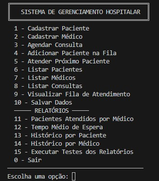

📘 Sobre o Projeto
Este projeto implementa um sistema hospitalar desenvolvido em C++ utilizando Programação Orientada a Objetos (POO). Ele permite o cadastro de pacientes e médicos, agendamento de consultas, geração de relatórios sobre pacientes e/ou médicos e armazenamento dos dados em arquivos JSON, garantindo persistência entre execuções.
⚙️ Principais Funcionalidades
- Cadastro e listagem de pacientes e médicos
- Agendamento e histórico de consultas
- Relatórios de consultas por médico ou por paciente
- Persistência de dados em JSON
- Fila de atendimento automatizada
🖼️ Demonstrações
Confira uma demonstração em vídeo abaixo:
🔗 Links
🔹 Repositório do Código
🔹 📄 Relatório do Projeto (PDF)
🔹 🎥 Vídeo de Apresentação